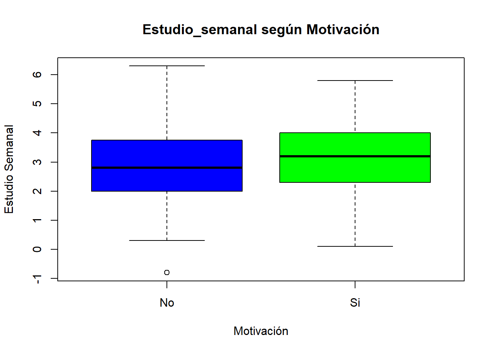
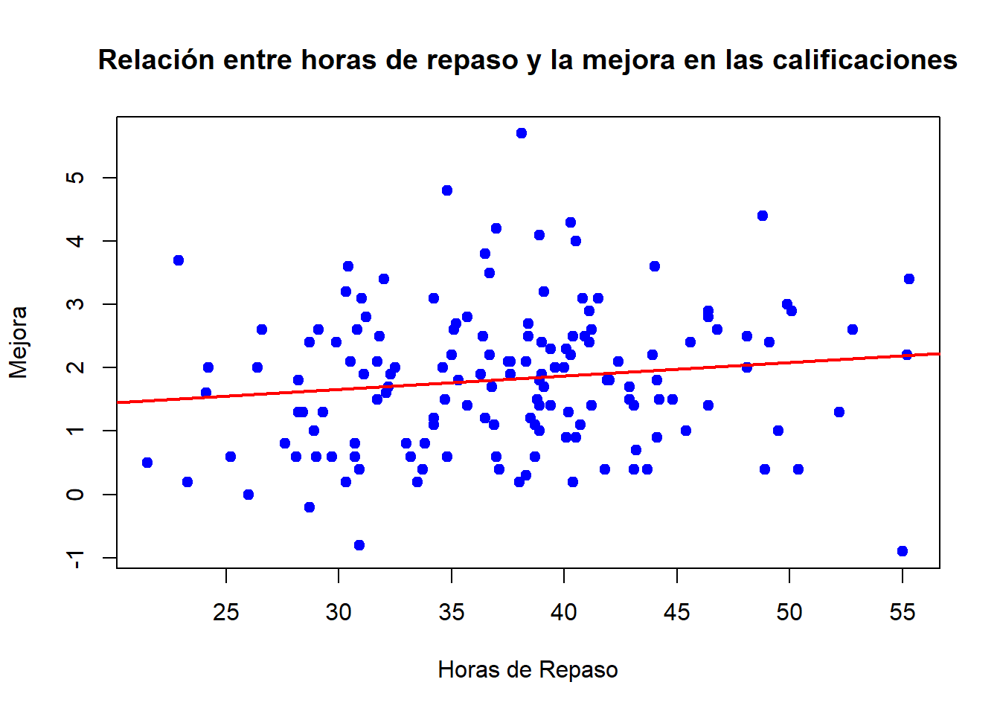

library(MASS)Taller evaluado de repaso para el Primer Parcial
20582- Análisis de Datos para el GMAT
Miquel Rivas Vanrell
Elige un tema que te interese (finanzas, medio ambiente, educación, cine, entre otros). En este taller, aplicarás los pasos del método científico (ver sección 1.1 de los apuntes de la asignatura) para abordar, con datos simulados, una problemática relacionada con el tema elegido. Deberás presentar un informe de tu proyecto siguiendo la estructura detallada en el documento “Recomendaciones para escribir informes de proyectos en Estadística,” que se encuentra en la sección “Práctica” de la página del curso en Aula Digital.
Primer paso:
Define los objetivos de tu trabajo: Describe la hipótesis general que deseas investigar y especifica los objetivos específicos necesarios para validar o refutar dicha hipótesis.
Respuesta
Desde hace unos años doy clase de repaso de matemáticas, física y química a alumnos de ESO y Bachiller y muchas veces me pregunto si mis clases sirven de algo o si es útil tener un profesor de repaso. La respuesta parece obvia, si no fuesen útiles las clases de repaso, nadie las solicitaría. Aún así, creo que esta respuesta no es del todo correcta. Siempre he pensado y he dicho a mis alumnos que las dos horas semanales en las que damos repaso no son suficientes para aprobar una asignatura y que son ellos los que deben hacer el mayor esfuerzo estudiando en su casa. Entonces, más bien la pregunta es: ¿Son los profesores de repaso una ayuda real para los alumnos o simplemente un apoyo y una motivación para que los jóvenes estudien en sus casas?
Segundo paso:
Define las variables clave para probar tu hipótesis. Asegúrate de incluir al menos cuatro variables cuantitativas, tres ordinales y dos nominales. Indica las unidades de medida para las variables cuantitativas y los niveles para las variables nominales y ordinales. A continuación, simula los datos en R de acuerdo a las siguientes pautas:
- Tabla 1: Genera una tabla con al menos 100 observaciones y las variables definidas en el paso anterior, asegurate que las variables cuantitativas sigan una distribución normal multivariante. A continuación, te presento un ejemplo que simula datos de una encuesta aplicada a estudiantes de secundaria sobre sus hábitos de estudio y rendimiento y que incluye información sobre su contexto de vida, como horas de sueño y tiempo de traslado a la escuela. Este ejemplo no lo debes usar en tu proyecto, solo es para darte una idea de lo que te pido hacer.
- Tabla 2: Consigue algunos datos en Internet que puedas utilizar para ayudar a resolver tu problema (una variable o dos basta), algunas ideas de dónde buscar son: datos abiertos del Gobierno de España, INE, Kaggle, etc.
Une ambas tablas utilizando un identificador simulado en una base de datos única. Emplea las funciones del paquete tidyverse explicadas en la sección 1.7.5 de los apuntes de la asignatura. Esta parte es opcional, pero te permitirá enriquecer tu base de datos y realizar análisis más completos.
Respuesta
Por la forma en la que se hacen las preguntas, se supone que se encuesta a alumnos que han tomado clases de repaso durante el curso académico 23/24.
Variables Nominales
Vamos a distinguir entre: 1-Género (masculino, femenino) 2-Curso (1ero Bach, 2ndo Bach) # Variables Ordinales Distinguimos: 1-¿Cuánto te ayudaban las explicaciones de tu profesor de repaso? (Nada, Poco, Mucho) 2-¿Estabas más motivado desde que tomaste clases de repaso? (Si, No) 3-¿Crees que ampliaste tus conocimientos de las asignaturas en las que tomaste clases de refuerzo? (Si, No) # Variables cuantitativas 1-¿Cuántas horas le dedicabas a las clases de repaso en el curso? 2-¿Cuántas horas semanales estudiabas en tu casa desde que empezaste en repaso? 3-¿Qué media llevabas antes de empezar las clases de repaso? 4-¿Con qué media acabaste el curso anterior después de las clases de repaso?
Para generar los datos, vamos a dar unas explicaciones. # Vector de medias 1-1 hora semanal, es decir 37 horas al curso 2-Supondremos que estudian unas 3 horas semanales 3-En base a mis alumnos, diremos que la media es de 4. 4-En base a mis alumnos, diremos que la media es de 6.
medias <- c(37,3,4,6)
covarianza <- matrix(c(40, 6, 3, 4,
6, 1.5, 0.6, 0.8,
3, 0.6, 1.2, 0.9,
4, 0.8, 0.9, 1.6),
nrow = 4, ncol = 4)
datos<- mvrnorm(150, mu = medias, Sigma = covarianza)
# Limitar y ajustar valores de promedio_calificaciones a escala 1-10
datos[,4] <- pmin(pmax(round(datos[,4], 1), 1), 10)
# Tabla 1 con los datos
rendimiento_estudiantil <- data.frame(
Sexo = ordered(sample(1:2, 150, replace = TRUE), labels = c( "F", "M")),
Curso = ordered(sample(1:2, 150, replace = TRUE), labels = c( "1BAT", "2BAT")),
Horas_repaso_años = round(datos[,1], 1),
Estudio_semanal = round(datos[,2], 1),
Notas_antes = round(datos[,3]),
Notas_despues = datos[,4],
Ayuda_repaso = sample(c("Nada", "Poco", "Mucho"), 150, replace = TRUE),
Motivación = ordered(sample(1:2, 150, replace = TRUE), labels = c( "No", "Si")),
Amppliar_conocimiento = ordered(sample(1:2, 150, replace = TRUE), labels = c( "No", "Si"))
)
head(rendimiento_estudiantil) Sexo Curso Horas_repaso_años Estudio_semanal Notas_antes Notas_despues
1 F 2BAT 51.5 5.8 6 6.8
2 F 2BAT 30.4 1.4 2 3.6
3 F 1BAT 37.7 3.0 2 4.4
4 M 2BAT 31.5 2.8 4 4.9
5 M 2BAT 36.9 2.7 2 5.2
6 F 1BAT 46.9 3.8 4 7.3
Ayuda_repaso Motivación Amppliar_conocimiento
1 Nada No Si
2 Nada No No
3 Nada Si No
4 Poco Si Si
5 Poco Si No
6 Poco No NoPara los datos de internet, los he obtenido del link que lleva a la página del ministerio, concretamente, son datos sobre: “Gasto total de los hogares en servicios educativos y gasto medio por hogar según tipo de servicio y tamaño del municipio de residencia”.
datos_internet<-read.csv("43476.csv")Tercer paso
Realiza un análisis descriptivo multivariantes de tu base de datos de acuerdo a los objetivos de tu trabajo. Describe lo observado en el contexto del problema.
Para las variables cuantitativas de tu base de datos, calcula e interpreta la información que proporciona la varianza generalizada y la varianza total
Respuesta
Vamos a tratar básciamente dos preguntas. 1-Cuantas más horas de repaso anuales, ¿más estudian los alumnos en sus casas? 2-¿La motivación hace que los alumnos estudien más? 3-¿Los alumnos que van más horas a repaso mejoran sus calificaciones?
Primera pregunta
df_preg1 <- rendimiento_estudiantil[, c("Horas_repaso_años", "Estudio_semanal")]
plot(df_preg1$Horas_repaso_años, df_preg1$Estudio_semanal,
main = "Relación entre horas de repaso y horas de estudio en casa",
xlab = "Horas de Repaso",
ylab = "Horas de Estudio en Casa",
pch = 19, col = "blue")
modelo_lineal <- lm(Estudio_semanal ~ Horas_repaso_años, data = df_preg1)
#añadir regresion
abline(modelo_lineal, col = "red", lwd = 2)cor.test(df_preg1$Horas_repaso_años, df_preg1$Estudio_semanal)
Pearson's product-moment correlation
data: df_preg1$Horas_repaso_años and df_preg1$Estudio_semanal
t = 15.315, df = 148, p-value < 2.2e-16
alternative hypothesis: true correlation is not equal to 0
95 percent confidence interval:
0.7121268 0.8381124
sample estimates:
cor
0.7830245 Concluimos que, efectivamente, las horas de repaso incentivan a los alumnos a estudiar en sus casas.
Pregunta 2
df_preg2 <- rendimiento_estudiantil[, c("Motivación", "Estudio_semanal")]
boxplot(Estudio_semanal ~ Motivación, data = rendimiento_estudiantil,
main = "Estudio_semanal según Motivación",
xlab = "Motivación",
ylab = "Estudio Semanal",
col = c("blue", "green"))
Pregunta 3
El hecho de mejorar las calificaciones lo entendemos como que la diferencia entre las notas a fin de curso y a principio sea positiva. Lo que haremos será, una nueva columna que se llame “Mejora” y sea Notas_despues-Notas_Antes
Mejora<- rendimiento_estudiantil$Notas_despues - rendimiento_estudiantil$Notas_antes
df_preg3 <- rendimiento_estudiantil[, c("Horas_repaso_años", "Notas_despues", "Notas_antes")]
df_preg3$Mejora<-MejoraAhora, realizamos el test en cuestión:
plot(df_preg3$Horas_repaso_años, df_preg3$Mejora,
main = "Relación entre horas de repaso y la mejora en las calificaciones",
xlab = "Horas de Repaso",
ylab = "Mejora",
pch = 19, col = "blue")
modelo_lineal <- lm(Mejora ~ Horas_repaso_años, data = df_preg3)
# 3. Agregar la línea de regresión al gráfico
abline(modelo_lineal, col = "red", lwd = 2)
cor.test(df_preg3$Horas_repaso_años, df_preg3$Mejora)
Pearson's product-moment correlation
data: df_preg3$Horas_repaso_años and df_preg3$Mejora
t = 1.2934, df = 148, p-value = 0.1979
alternative hypothesis: true correlation is not equal to 0
95 percent confidence interval:
-0.05548075 0.26155087
sample estimates:
cor
0.1057208 Efectivamente, la correlación es positiva y la pendiente de la recta de regresión también pero debemos de ser cautos a la hora de decir que si son elementos correlacionados ya que no es una correlación muy muy notoria.
Cuarto paso
Selecciona una de las variables no cuantitativas y modelízala con una distribución multinomial, debes estimar sus parámetros. Utiliza el modelo para calcular la probabilidad de que ocurra un evento de interés en una muestra de tamaño 20, relevante para tu problema.
Respuesta
Vamos a considerar la variable Ayuda_Repaso que tiene como posibles respuestas Nada, Poco, Mucho.
# Calcular las frecuencias de cada categoría
frecuencias <- table(rendimiento_estudiantil$Ayuda_repaso)
# Convertir a proporciones (probabilidades)
probs <- prop.table(frecuencias)
frecuencias
Mucho Nada Poco
46 47 57 print(probs)
Mucho Nada Poco
0.3066667 0.3133333 0.3800000 Los parametros en una distribución multinomial son las probabilidades anteriores. Por tanto, los estimadores son 0.3267, 0.3467, 0.3266.
subgrupo <- c(Mucho = 7, Nada = 7, Poco = 6)
probabilidad <- dmultinom(subgrupo, size = 20, prob = probs)
print(probabilidad)[1] 0.03029318La probabilidad es muy baja, es decir, no podemos afirmar la hipótesis del enunciado.
Quinto paso
Con las variables cuantitativas de tu base de datos, ajusta un modelo de regresión multivariante en la forma:
\[Y=\beta_0+\beta_1 X_1+ \cdots + \beta_p X_p + \epsilon\] Donde \(Y\) es la variable cuantitativa que deseas explicar en función del resto de variables cuantitativas registradas. Además, calcula la función de score e interpreta su resultado en el contexto del problema.
Respuesta
Vamos a ver como depende las notas al final de curso de las otras variables cuantitativas.
modelo <- lm(rendimiento_estudiantil$Notas_despues ~ rendimiento_estudiantil$Notas_antes + rendimiento_estudiantil$Horas_repaso_años + rendimiento_estudiantil$Estudio_semanal, data = rendimiento_estudiantil)
summary(modelo)
Call:
lm(formula = rendimiento_estudiantil$Notas_despues ~ rendimiento_estudiantil$Notas_antes +
rendimiento_estudiantil$Horas_repaso_años + rendimiento_estudiantil$Estudio_semanal,
data = rendimiento_estudiantil)
Residuals:
Min 1Q Median 3Q Max
-2.26818 -0.62786 0.01723 0.57547 2.42364
Coefficients:
Estimate Std. Error t value Pr(>|t|)
(Intercept) 1.85227 0.54201 3.417 0.000819
rendimiento_estudiantil$Notas_antes 0.53056 0.07117 7.454 7.35e-12
rendimiento_estudiantil$Horas_repaso_años 0.04389 0.02039 2.153 0.032988
rendimiento_estudiantil$Estudio_semanal 0.11929 0.09526 1.252 0.212492
(Intercept) ***
rendimiento_estudiantil$Notas_antes ***
rendimiento_estudiantil$Horas_repaso_años *
rendimiento_estudiantil$Estudio_semanal
---
Signif. codes: 0 '***' 0.001 '**' 0.01 '*' 0.05 '.' 0.1 ' ' 1
Residual standard error: 0.9119 on 146 degrees of freedom
Multiple R-squared: 0.5018, Adjusted R-squared: 0.4916
F-statistic: 49.02 on 3 and 146 DF, p-value: < 2.2e-16predicciones <- predict(modelo, rendimiento_estudiantil)
ECM <- mean((rendimiento_estudiantil$Notas_despues - predicciones)^2) #Error cuadratico medio
print(paste("Error Cuadrático Medio:", ECM))[1] "Error Cuadrático Medio: 0.809389079538292"Antes de interpretar el ECM, debemos calcular la varianza y ver si el error cuadrático medio es mucho menor que esta
149/150*var(rendimiento_estudiantil$Notas_despues)[1] 1.624667En este caso, el ECM es casi la mitad de la varianza, por tanto es demasiado alto, esto nos dice que puede haber errores en nuestra predicción.
Aún así, basandonos en los resultados: Nnotemos que lo más influyente es las notas a inicio de curso seguido de las horas de estudio semanal y finalmente las horas de repaso, (además con errores relativamente bajos), lo que nos dice que solo acudir a clases de repaso no tiene influencia sobre la calificación final. Notemos que el p-valor es muy bajo, por tanto, hay efecto entre las variables.
Sexto paso
Realiza un contraste de hipótesis de dos medias multivariante que sea relevante para tu problema. Por ejemplo, podrías evaluar si el vector de medias de la variable cuantitativa de interés \(Y\) es el mismo para dos niveles distintos de la variable no cuantitativa que modelaste como multinomial en el paso anterior. Ejecuta el contraste tanto teóricamente como con la función hotelling.test en R. Escribe la conclusión del contraste en el contexto de tu problema.
Respuesta
Debemos seleccionar las notas a fin de curso con si creen que han ampliado su conocimiento, es decir.(Lo haremos solo con las respuestas nada y mucho)
Ahora, planteamos el test de hipótesis con hipótesis nula, tienen la misma media.
library(Hotelling)Cargando paquete requerido: corpcorgrupo_NO <- rendimiento_estudiantil[rendimiento_estudiantil$Amppliar_conocimiento == "No", "Notas_despues", drop = FALSE]
grupo_SI <- rendimiento_estudiantil[rendimiento_estudiantil$Amppliar_conocimiento == "Si", "Notas_despues", drop = FALSE]
print(hotelling.test(grupo_NO, grupo_SI))Test stat: 0.47158
Numerator df: 1
Denominator df: 148
P-value: 0.4933 Notamos que, segun el p-valor que hemos obtenido, aceptamos la hipótesis nula, es decir, la media de las calificaciones de los alumnos que creen que han ampliado su conocimiento es igual a las de los que creen que no. Tendemos a pensar que ampliar conocimientos en una asignatura es directamente proporcional a sacar buenas calificaciones en esta. En este caso se muestra como la gente puede pensar que no se amplian sus conocimientos pero si sacan mejores calificaciones.
Último paso
Recuerda que:
De acuerdo con las recomendaciones para redactar informes de proyectos en Estadística, tu informe debe incluir conclusiones, recomendaciones y bibliografía.
Crea un repositorio en GitHub para tu proyecto y asegúrate de añadir en el encabezado YAML la siguiente opción necesaria para la renderización sin problemas:
Rendering:
embed-resources: true¡Buena suerte y disfruta del proceso!
Respuesta
En conclusión, según esta muestra generada aleatoriamente sobre las clases de repaso podemos concluir que hay una relación clara entre la mejoría de califiaciones por parte de los alumnos que acuden a clase y por parte de los alumnos que estan motivados a estudiar más en sus casas. Las clases de repaso no solo constituyen una ayuda para comprender mejor las explicaciones de los profesores, sino también un gran soporte para que los alumnos estudien más en sus casas.
Bibliografia
Se han usado los apuntes de la asignatura además de consultarse dudas en internet. \
https://datos.gob.es/es/catalogo/ea0010587-gasto-total-de-los-hogares-en-servicios-educativos-y-gasto-medio-por-hogar-segun-tipo-de-servicio-y-tamano-del-municipio-de-residencia-identificador-api-t13-p460-2019-l0-01011-px1